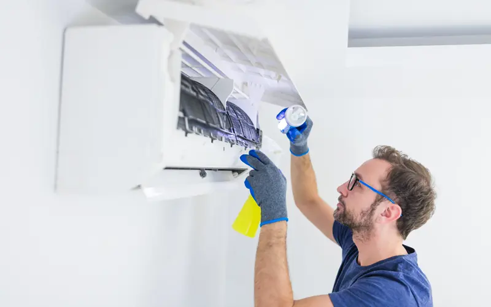
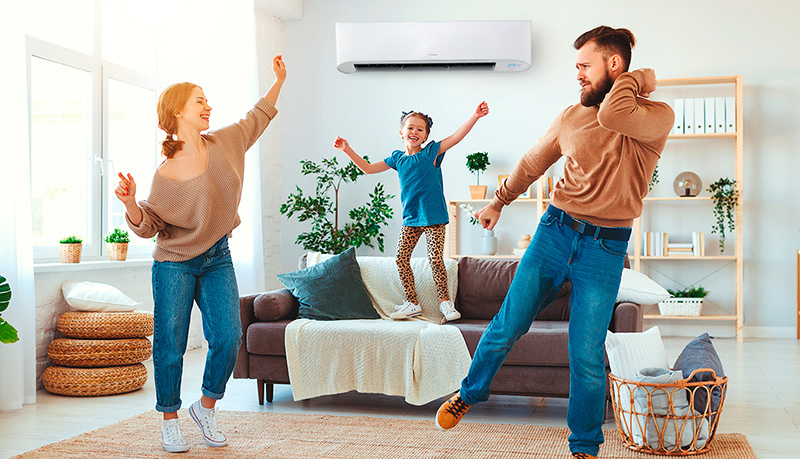

En días agobiantes se corre el riesgo de sobreexigir a los equipos y que su consumo eléctrico se dispare. Cómo evitarlo sin resignar confort.

En tiempos de ola de calor y de temperaturas agobiantes como los actuales, es fácil sentir un alivio encendiendo el aire acondicionado. El peligro, si no se toman ciertos recaudos, es que esta comodidad termine teniendo un impacto excesivo en la próxima factura del servicio eléctrico, que en muchos hogares ya empezó a perder los subsidios.
Para evitar sorpresas, según los expertos, tener un equipo moderno y eficiente es clave. Pero también lo es adoptar una serie de pautas de uso y precauciones sencillas para que el artefacto no trabaje más de lo necesario, cuidar el frío generado y distribuirlo mejor por el ambiente.
En un informe reciente titulado Eficiencia energética en el sector residencial, Salvador Gil, doctor en Física y experto en consumos de energía, estimó a partir de estudios de campo que sólo con algunos cambios de hábitos y medidas de bajo costo los gastos de refrigeración de una vivienda típica pueden bajar entre 30% y 60%, sin resignar confort.
Con las recomendaciones de este experto, y con guías publicadas por la Secretaría de Energía, el ENRE y el fabricante de equipos Electra, Clarín armo la siguiente lista de diez consejos prácticos para empezar a ahorrar hoy mismo al usar el aire acondicionado.

-
Antes de encender, limpiar bien los filtros
Con las semanas y meses de uso, los filtros que están dentro de la unidad interior del equipo split se van llenando de partículas que, al acumularse y compactarse, empiezan a dificultar el paso del aire. Esto hace que el equipo se vea obligado a funcionar por más tiempo que lo normal para conseguir que baje la temperatura del ambiente, lo que eleva finalmente el consumo de electricidad. Para evitar este sobreconsumo, recomiendan limpiar los filtros una vez al mes; o por menos cada seis meses, al comienzo de cada temporada. La serpentina exterior, a su vez, debería limpiarse una vez al año.
-
Aislar muy bien los ambientes
Mientras el artefacto esté encendido, para cuidar el frío generado, habrá que reducir hasta el mínimo los intercambios de aire entre el ambiente refrigerado y el exterior (donde el aire está más caliente). Para esto es clave cerrar puertas y ventanas, pero también bloquear todas las hendijas y grietas por las que pueda haber infiltraciones, típicamente en ventanas, taparrollos y cerramientos. Colocar o renovar burletes es una solución económica que puede hacer la diferencia.
-
Limitar el ingreso de luz solar
Aunque a veces se subestima su efecto, los rayos de sol que entran directamente en el hogar contribuyen a caldear los ambientes y fuerzan por lo tanto al acondicionador a trabajar más. El efecto es comparable con el de un auto que se deja al sol. Para que esto no ocurra, lo más recomendado es utilizar cortinas de colores claros, así como persianas, parasoles, toldos o postigos en las ventanas expuestas al sol.
 -
Fijar una temperatura moderada
Con ropa liviana la mayoría de las personas no necesitan estar a menos de 25° para sentirse cómodas durante el día, ni a menos de 27° mientras duermen tapados con una sábana. Pedirle al acondicionador temperaturas menores, además de innecesario, resulta bastante costoso. Como ejemplo, sólo subir el aire de 24° a 25° genera un ahorro del 34% en el consumo de energía. En cambio, por cada grado que se baje el termostato el consumo crecerá un 30%, según estimó Gil.
-
No intentar apurar bajando grados
Aunque muchos piensan lo contrario, programar el aire en 18° cuando se llega al hogar no logrará que el ambiente se enfríe más rápido. Lo que sí puede agilizar un poco el trámite es aumentar la velocidad del ventilador. Si se lo fija en 25° o 26° y el equipo detecta que la temperatura es muy superior a eso, igual funcionará a máxima potencia hasta alcanzar la meta, sin riesgo de terminar enfriando en exceso.
-
Apuntar los deflectores hacia arriba
Así como el aire caliente tiende a subir y acumularse cerca del techo, el aire frío se comporta del modo opuesto. Teniendo en cuenta esto, el consejo es programar el equipo para que "sople" hacia arriba el aire frío. "De esa manera se logra una mayor eficiencia energética. Si apuntaran al suelo se generaría una capa de aire frío a la altura de tus pies, lo que retrasaría la refrigeración del ambiente", indicaron los especialistas de Electra.
 -
Al irse del lugar, apagar siempre el equipo
Salvo que la ausencia sea de unos pocos minutos, la comodidad de que la habitación ya esté fresca al regresar no justifica semejante gasto de energía. "Cuando no haya nadie en el ambiente o en la vivienda, se deben apagar. Los equipos modernos permiten encontrar el ambiente fresco al llegar porque se los puede programar para que se enciendan unos minutos antes", agregaron desde Electra.
-
Cuando afuera refresca, apagar y ventilar
A veces, por tener todo cerrado y no advertir que en el exterior la temperatura ya bajó, se sigue gastando energía en refrigerar el ambiente, en vez de simplemente permitir que ingrese aire fresco del exterior. La recomendación, así, es monitorear con frecuencia y mantenerse atento a lo que indica el termómetro afuera. Y apenas la marca externa sea menor a la temperatura programada en el aire, apagar éste y abrir las ventanas para permitir que la vivienda se ventile gratis de forma natural.
-
De noche y en días no tan cálidos, preferir el ventilador
Cuando la temperatura está por debajo de 29° o 30°, usar estos aparatos puede resultar más que suficiente para sentirse bien, tanto en sus variantes de techo como en las de pie. La gran ventaja es que los ventiladores consumen entre 10 y 15 veces menos energía que un acondicionador de aire y logran generar una sensación de descenso de temperatura de entre 3° y 5°. También se puede utilizar el modo de ventilación del propio equipo de aire acondicionado, que permite la circulación del aire sin encender el compresor.

-
Si el aire es obsoleto, cambiarlo pronto
Aconsejan reemplazar cuanto antes equipos antiguos que no tengan etiqueta de eficiencia energética o los que estén marcados en ellas con las letras B, C, D, E o inferiores: cuanto más lejos de la A, mayor es su consumo de energía para enfriar el mismo ambiente. Según Gil, los más eficientes son los de clase A tanto en frío como en calor, equipados además con la tecnología Inverter. Estos aparatos, explica, son los más recomendables porque logran mantener la temperatura deseada ahorrando 35% a 50% de la energía frente a un equipo equivalente convencional. El cambio puede resultar un poco más costoso, pero actualmente se puede financiar con tarjeta de crédito hasta en 30 cuotas fijas con tasa reducida del plan oficial Ahora 30. Y generarán un importante ahorro a largo plazo, durante toda su vida útil.